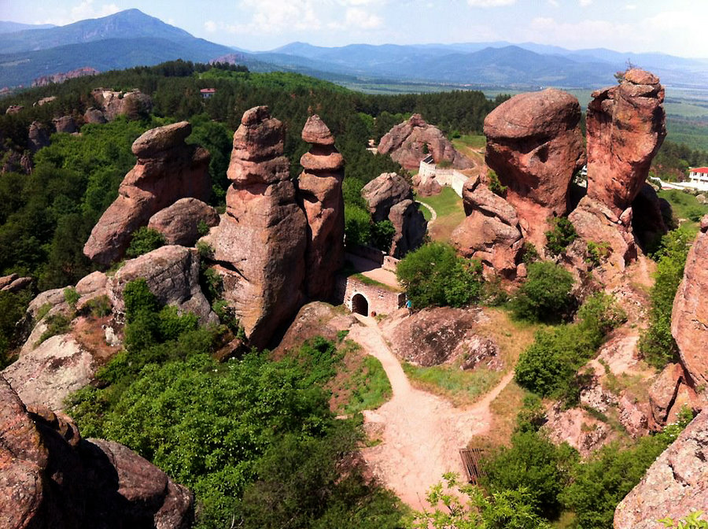

Белоградчишките скали.
Белоградчѝшките скали са скални форми в Западния Предбалкан, в южното подножие на Белоградчишкия венец, около Белоградчик и селата Боровица, Чифлик и Праужда в област Видин и село Белотинци, област Монтана.
